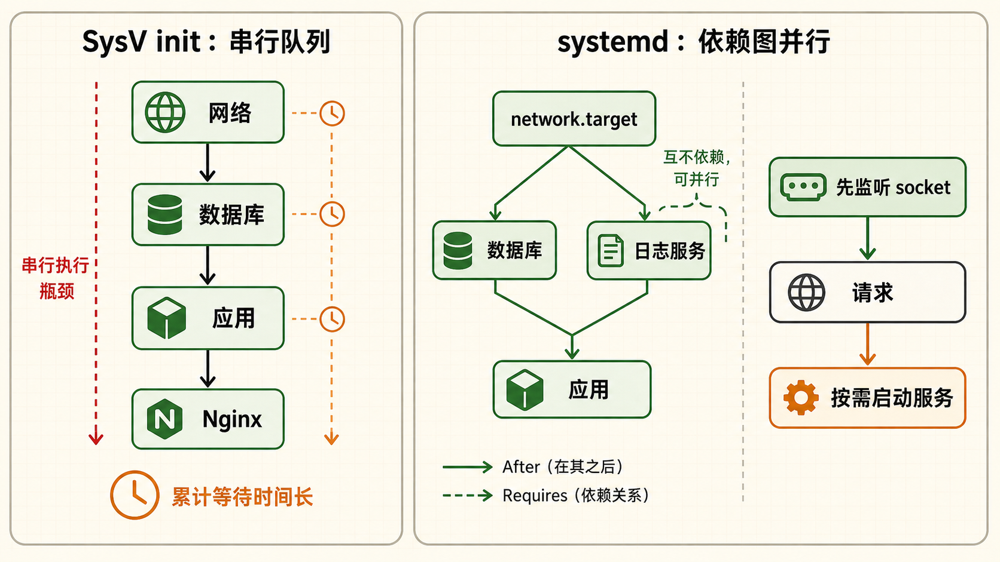
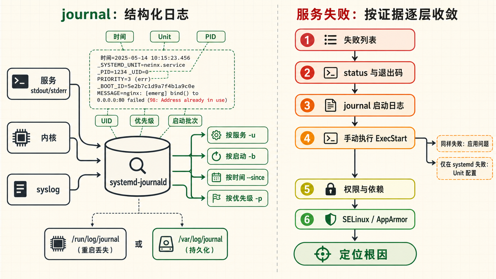
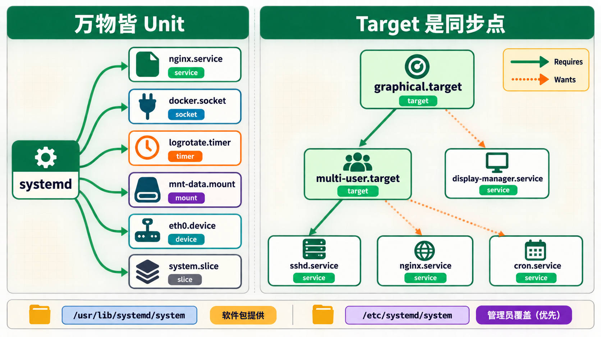
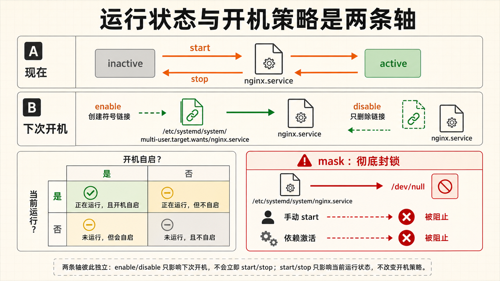
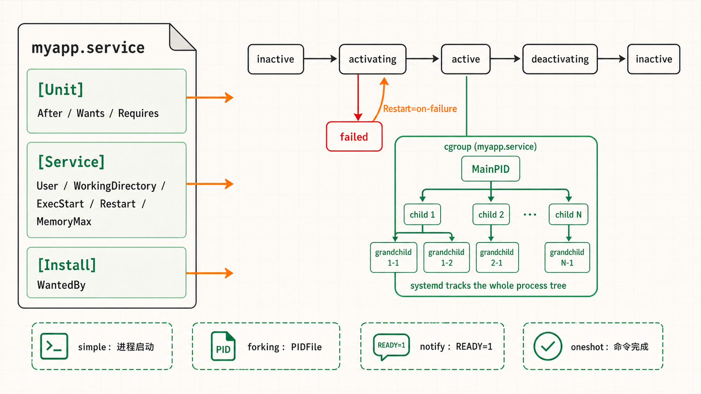

1systemd vs SysV init
Linux 初始化系统为什么需要一次彻底的变革？
原理回顾 SysV init —— 老一代的启动方式
在 systemd 之前，绝大多数 Linux 发行版使用 SysV init（System V init）。它起源于古老的 Unix System V，核心是一个 PID=1 的 /sbin/init 进程。init 启动后读取 /etc/inittab，决定进入哪个运行级别（runlevel），然后依次执行 /etc/rc.d/rc*.d/ 目录下的启动脚本。每个脚本都是一个 Bash 脚本，以 S（start）或 K（kill）开头加数字序号，数字决定启动顺序。
- 串行启动：服务一个接一个启动，下一个必须等上一个完成。哪怕两个服务之间毫无依赖关系，也得排队。一台有上百个服务的服务器，开机可能要等几分钟。
- Bash 脚本质量不一：每个服务的管理脚本由不同开发者编写，质量参差不齐。有的脚本忘记处理 PID 文件、有的没有正确的 stop 逻辑。运维人员很难统一管理和排错。
- 无原生依赖管理：init 只管按顺序跑，不检查前置依赖是否就绪。网络还没通就启动 Nginx——这种情况只能人工加
sleep，非常不可靠。
systemd 的革命性设计
systemd 由 Lennart Poettering 于 2010 年创建，它不是一个"加强版 init"，而是一套完整的系统管理平台。它重新思考了进程生命周期、依赖管理、日志存储、资源限制等全部环节，提供统一的管理接口。
| 对比维度 | SysV init | systemd |
|---|---|---|
| 启动方式 | 串行，按固定编号顺序 | 并行，根据依赖关系 DAG 调度 |
| 启动脚本 | Bash 脚本，质量不统一 | 声明式 Unit 文件（INI 格式），标准化 |
| 依赖管理 | 靠脚本中的顺序编号，不够可靠 | 显式声明 Requires/Wants/After，系统自动解析 |
| 日志存储 | 纯文本文件，需 logrotate 轮转 | 结构化二进制日志（journal），支持索引搜索 |
| 进程管理 | 仅靠 PID 文件追踪 | cgroup 集成，精确追踪进程树、限制资源 |
| 按需激活 | 不支持 | Socket Activation / Timer Activation |
| 并发策略 | 无 | Socket 激活：先建 socket，收到请求后才启动服务 |
Socket 激活 —— 为支持该机制的服务按需启动
Socket 激活需要为具体服务配置配套的 .socket 与 .service Unit，且服务程序要能接收 systemd 传入的监听文件描述符。系统先监听相应的端口或 Unix socket，有连接到来时再启动服务并移交描述符；它不是给所有服务自动建立一个 socket 池，也不保证启动耗时减半。数据库等未适配的服务仍按自己的依赖关系启动。排查时先看 systemctl status 服务名.socket，再核对服务是否支持该协议。


各发行版接入 systemd 的时间线
Fedora（2011）→ Arch Linux（2012）→ openSUSE（2012）→ RHEL 7（2014）→ Debian 8（2015）→ Ubuntu 15.04（2015），越来越多发行版把 systemd 作为默认 init。Ubuntu、Debian 与 RHEL 系发行版的常见服务管理接口都是 systemctl，但服务名、Unit 文件路径和包内配置可能不同；Alpine 等发行版则采用其他 init，操作前先确认环境。
2Unit 类型详解
systemd 中万物皆 Unit —— 统一管理的基石
核心概念什么是 Unit？
在 systemd 的世界里，一切被管理的对象都叫 Unit。一个 Unit 就是一个带有 .service、.socket、.timer 等后缀的配置文件，用 INI 格式描述了这个对象的属性、依赖关系和启动方式。所有 Unit 文件放在 /usr/lib/systemd/system/（软件包安装的）或 /etc/systemd/system/（管理员自定义的）下，后者优先级更高。
常见的 Unit 类型一览
| Unit 类型 | 后缀 | 用途 | 举例 |
|---|---|---|---|
| Service | .service | 管理后台服务进程（最常用） | nginx.service, sshd.service |
| Socket | .socket | 监听 TCP/UDP/Unix Socket，实现按需激活 | docker.socket, sshd.socket |
| Mount | .mount | 挂载点管理（替代 fstab 中的一部分场景） | mnt-data.mount |
| Timer | .timer | 定时任务触发器（替代 cron） | logrotate.timer |
| Target | .target | 运行级别 / 同步点 / 分组点 | multi-user.target, graphical.target |
| Device | .device | 硬件设备管理 | sys-subsystem-net-devices-eth0.device |
| Slice | .slice | cgroup 资源分组 | system.slice, user.slice |
| Scope | .scope | 外部创建的进程组 | session-1.scope |
Target —— 运行级别的现代化身
在 SysV init 时代，运行级别（runlevel 0-6）定义了系统处于什么状态。systemd 用 Target 替代了 runlevel，但概念更灵活——Target 是一个逻辑分组点，一个 Target 可以"需求"（Requires）其他 Unit，形成依赖树。常见的对应关系：
| SysV Runlevel | systemd Target | 说明 |
|---|---|---|
| runlevel 0 | poweroff.target | 关机 |
| runlevel 1 | rescue.target | 单用户救援模式 |
| runlevel 3 | multi-user.target | 多用户文本模式（服务器常用） |
| runlevel 5 | graphical.target | 多用户图形界面 |
| runlevel 6 | reboot.target | 重启 |
# 查看当前默认运行级别（默认启动到哪个 target）
systemctl get-default
# 切换为纯命令行模式（相当于 init 3）
systemctl set-default multi-user.target
# 查看当前 Target 的完整依赖树
systemctl list-dependencies multi-user.targetTimer —— 现代 cron 替代方案
systemd Timer 可以替代 cron 做定时任务，而且有 cron 不具备的优势：精确到秒级（cron 最低到分钟）、可以记录每次执行日志（journalctl 统一查看）、支持随机延迟（避免惊群效应）、支持单调计时器（开机后 X 秒执行，不依赖系统时钟）。一个 Timer 通常和一个同名的 Service Unit 配套使用。
# 列出所有定时器，查看下次执行时间和上次执行状态
systemctl list-timers --all
# 典型输出示例：
# NEXT LEFT LAST PASSED UNIT
# Fri 2026-08-01 00:00:00 CST 4h Thu 2026-07-31 00:00:00 CST 19h ago logrotate.timer
# Fri 2026-08-01 06:00:00 CST 10h Thu 2026-07-31 06:00:00 CST 13h ago fstrim.timer
3systemctl 命令大全
systemctl —— 运维日常使用频率最高的命令
实操服务生命周期管理（start / stop / restart / reload）
这是运维人员每天都要敲的命令。systemd 对服务定义了清晰的生命周期：inactive（未运行）→ activating（启动中）→ active（运行中）→ deactivating（停止中）→ failed（启动失败）。
# 启动服务
systemctl start nginx
# 停止服务
systemctl stop nginx
# 重启服务（先 stop 再 start，服务会有短暂中断）
systemctl restart nginx
# 重载配置（进程不重启，只重新读取配置文件——零中断）
# 只有支持 SIGHUP 信号的服务才有效，如 nginx、haproxy
systemctl reload nginx
# 尝试重载配置，如果服务不支持 reload 则执行 restart
systemctl reload-or-restart nginx
# 条件重启：只在服务已经在运行时才重启
systemctl try-restart nginx开机自启管理（enable / disable / mask）
enable 和 start 是两个独立的操作：start 是"现在就启动"，enable 是"开机时自动启动"。二者互不影响。很多新手装了 Nginx 后 systemctl start nginx 发现重启后 Nginx 没起来——因为他们只做了 start 没做 enable。enable 的本质是创建一个从 /etc/systemd/system/multi-user.target.wants/ 到 Unit 文件的符号链接。

# 设置开机自启
systemctl enable nginx
# 取消开机自启
systemctl disable nginx
# 查看是否已设置开机自启
systemctl is-enabled nginx
# 屏蔽服务（mask = 彻底禁止，连手动 start 都不行）
# 本质：将 Unit 文件符号链接到 /dev/null
systemctl mask nginx
# 取消屏蔽
systemctl unmask nginx状态查询命令
# 查看服务详细状态（最后10行日志、进程树、cgroup 信息）
systemctl status nginx
# 列出所有已加载的 Unit（默认只显示 active 的）
systemctl list-units
# 列出所有 Unit（包含 inactive 和 failed 的）
systemctl list-units --all
# 只列出 service 类型的 Unit
systemctl list-units --type=service
# 列出所有启动失败的 Unit——排错第一步！
systemctl list-units --failed
# 查看 Unit 之间的依赖关系
systemctl list-dependencies nginx
# 查看当前系统上所有已安装的 Unit 文件
systemctl list-unit-files▶ 典型排查场景
$ systemctl list-units --failed
UNIT LOAD ACTIVE SUB DESCRIPTION
● nginx.service loaded failed failed A high performance web server
$ systemctl status nginx
... 直观显示进程退出码和最后几行错误日志 ...Unit 文件管理命令
# 查看 Unit 文件的完整内容（包括所有包含的片段）
systemctl cat nginx
# 编辑 Unit 文件——创建一个 override 文件（推荐！不修改原始文件）
# 这会在 /etc/systemd/system/nginx.service.d/override.conf 创建覆盖配置
systemctl edit nginx
# 直接编辑原始 Unit 文件（不推荐，升级软件包时会丢失）
systemctl edit --full nginx
# 修改 Unit 文件后执行此命令，让 systemd 重新加载配置
systemctl daemon-reload
# 验证 Unit 文件的语法正确性
systemd-analyze verify /etc/systemd/system/myapp.service
# 查看服务的实时日志
journalctl -u nginx -fsystemctl edit nginx 时，systemd 创建一个 drop-in 目录和配置文件。原始 Unit 文件不会被修改，你的覆盖配置追加在末尾。升级软件包时原始文件可能被覆盖，但你的 override 文件安全留存。这是最佳实践。4自定义 Service Unit
从零编写生产级 Service Unit 文件
实战Unit 文件的结构
一个 systemd Service Unit 文件由三个小节组成：[Unit]——描述基本信息与依赖；[Service]——定义如何启动、停止、重启进程；[Install]——定义在哪个 Target 下启用此服务（决定开机自启的位置）。
完整示例：部署一个自定义 Go/Node/Python 应用
# 文件：/etc/systemd/system/myapp.service
[Unit]
Description=My Application Web Service
Documentation=https://docs.myapp.com
After=network-online.target # 在网络完全就绪后启动
Wants=network-online.target # 不强依赖网络，但有最好
Requires=postgresql.service # 强依赖数据库，数据库没启则本服务不启动
[Service]
Type=simple # 进程类型（见下文详解）
User=myapp # 以非 root 用户运行——安全最佳实践
Group=myapp
WorkingDirectory=/opt/myapp # 进程的工作目录
ExecStart=/opt/myapp/bin/myapp --config /etc/myapp/config.yaml
ExecStop=/bin/kill -s TERM $MAINPID # 停止时发送 TERM 信号
ExecReload=/bin/kill -s HUP $MAINPID # reload 时发送 HUP 信号
Restart=always # 无论什么原因退出都自动重启
RestartSec=10 # 重启前等待 10 秒（防止频繁重启）
StandardOutput=journal # 标准输出写入 journal
StandardError=journal # 标准错误写入 journal
EnvironmentFile=-/etc/myapp/env # 从环境变量文件加载（- 表示文件不存在不报错）
LimitNOFILE=65536 # 最大文件描述符数
OOMScoreAdjust=-500 # OOM Killer 调低 kill 优先级
CPUQuota=50% # 限制 CPU 使用率不超过 50%
MemoryMax=512M # 限制最大内存使用
[Install]
WantedBy=multi-user.target # 开机自启的位置Type= 的四种常见模式——必知必会
Type= 是 Service 文件中最重要的参数之一，它告诉 systemd 如何判断"服务已经启动成功"。
| Type | 启动判定 | 适用场景 |
|---|---|---|
| simple | 主进程启动即视为启动成功 | 大多数应用。（默认值） |
| forking | 主进程 fork 出子进程后退出——子进程成为守护进程，systemd 通过 PIDFile 追踪 | 传统 Unix 守护进程（如 nginx daemon on）。必须配合 PIDFile= |
| notify | 进程启动后通过 Unix socket 发送 sd_notify("READY=1") 通知系统已就绪 | 支持 systemd notify 协议的应用（最精确的启动通知） |
| oneshot | 主进程执行完退出即视为成功。通常配合 RemainAfterExit=yes 使用 | 一次性的初始化脚本、配置写入脚本 |
PIDFile= 指定 PID 文件路径，否则 systemd 将无法正确追踪服务状态，导致 start 超时。新开发的应用建议直接使用 Type=simple，不要 fork 到后台，让 systemd 管理进程生命周期。Restart= 策略选择
# Restart=no —— 永不自动重启（默认）
# Restart=always —— 无论什么原因退出都重启（最常用）
# Restart=on-success —— 只在退出码为 0 时重启
# Restart=on-failure —— 只在退出码非 0、收到信号时重启（推荐！）
# Restart=on-abnormal—— 只在收到信号或超时时重启
# Restart=on-watchdog—— 看门狗超时时重启
部署流程四步走
# 1. 创建 service 文件
sudo vim /etc/systemd/system/myapp.service
# 2. 重新加载 systemd 配置
sudo systemctl daemon-reload
# 3. 启用开机自启
sudo systemctl enable myapp
# 4. 启动服务并检查状态
sudo systemctl start myapp
sudo systemctl status myapp5journalctl 日志查询
journalctl —— 结构化日志查询引擎
实操journal 日志与传统文本日志的本质区别
传统的 /var/log/syslog、/var/log/nginx/access.log 是纯文本文件——搜索必须按行扫描，效率低。systemd journal 是二进制结构化日志，每条日志都带有元数据：时间戳（微秒级精度）、UID/GID、进程名、主机名、syslog 标识符、优先级等。这意味着你可以像查数据库一样用结构化字段过滤日志，而不需要用 grep 逐行扫。
最常用的查询命令
# 查看指定服务的全部日志
journalctl -u nginx
# 实时跟踪日志（相当于 tail -f）
journalctl -u nginx -f
# 查看本次启动以来的日志（-b = boot）
journalctl -b
# 查看上次启动的日志（排查重启前的问题）
journalctl -b -1
# 按时间过滤
journalctl --since "2026-07-31 10:00:00" --until "2026-07-31 12:00:00"
journalctl --since "1 hour ago"
journalctl --since "yesterday"
journalctl --since "30 minutes ago"
# 按优先级过滤（0=emerg, 1=alert, 2=crit, 3=err, 4=warning）
journalctl -p err # 只看错误及以上
journalctl -p 3 # 等价于 -p err
journalctl -p warning▶ 优先级速查
# 0 emerg - 系统不可用
# 1 alert - 必须立即处理
# 2 crit - 严重错误
# 3 err - 一般错误
# 4 warning - 警告
# 5 notice - 一般但重要的通知
# 6 info - 普通信息
# 7 debug - 调试信息高级过滤与聚合
# 内核日志（相当于 dmesg）
journalctl -k
# 查看指定可执行文件的日志
journalctl /usr/bin/nginx
# 查看指定用户的日志
journalctl _UID=1000
# 多个条件组合
journalctl -u nginx -p err --since "1 hour ago"
# 输出最近的日志（按行数）
journalctl -u nginx -n 50 # 最后 50 行
journalctl -u nginx -n 50 --no-pager # 不分页，直接全量输出
# JSON 格式输出（供 logstash/filebeat 采集）
journalctl -u nginx -o json-pretty
# 简洁单行格式
journalctl -u nginx -o short-iso日志存储空间管理
journald 的 Storage=auto 会在存在 /var/log/journal/ 时持久化，否则通常使用 /run/log/journal/ 临时存储；发行版可能预先创建持久化目录。容量受 journald 默认配额及配置项约束，不应假定必然占满磁盘。先用下列命令检查现状，再按保留需求调整上限：
# 查看当前日志占用的磁盘空间
journalctl --disk-usage
# 限制日志最大占用 500MB（旧日志自动删除）
journalctl --vacuum-size=500M
# 删除 7 天前的日志
journalctl --vacuum-time=7d
# 永久修改存储上限（编辑配置文件）
# /etc/systemd/journald.conf
# SystemMaxUse=500M
# 修改后重启 journald：systemctl restart systemd-journald/var/log/syslog 等传统文本文件。这意味着你不用在 journal 和 syslog 之间二选一——两个可以同时工作。如果磁盘空间敏感，可以考虑关闭 rsyslog 只保留 journald。6服务故障排查实战
当服务启动失败时，按这套流程 5 分钟定位根因
故障排查标准排查流程——按序执行
- 查失败列表：
systemctl list-units --failed——哪些服务挂了？ - 看详细状态：
systemctl status <服务名> -l——退出码是多少？systemd 给出的错误描述是什么？ - 看启动日志：
journalctl -u <服务名> --since "5 minutes ago"——进程自己打印了什么错误消息？ - 手动执行命令：复制 Unit 文件中的
ExecStart=命令在终端手动执行一遍——如果也报错，说明不是 systemd 的问题，是应用本身的问题。 - 检查文件权限：
ls -la <可执行文件>、ls -la <配置文件>——运行 User 有没有读/执行权限？ - 检查依赖服务：
systemctl list-dependencies <服务名>——依赖的数据库/网络是否正常？ - 检查 SELinux/AppArmor：
ausearch -m avc --start recent——安全策略是否阻止了进程启动？
实战案例：Nginx 无法启动
# 第一步：看失败列表
$ systemctl list-units --failed
UNIT LOAD ACTIVE SUB DESCRIPTION
● nginx.service loaded failed failed A high performance web server
# 第二步：看详细状态
$ systemctl status nginx -l
● nginx.service - A high performance web server
Loaded: loaded (/lib/systemd/system/nginx.service; enabled)
Active: failed (Result: exit-code) since Thu 2026-07-31 14:22:00 CST
Process: 12345 ExecStartPre=/usr/sbin/nginx -t (code=exited, status=1/FAILURE)
# 这里清楚地显示 ExecStartPre (nginx -t 语法检查) 失败了
# 退出码为 1，说明配置文件有语法错误
# 第三步：手动验证
$ nginx -t
nginx: [emerg] unexpected "}" in /etc/nginx/nginx.conf:42
# 定位到问题：第 42 行多了一个花括号实战案例：服务启动了但无法访问
# 服务状态显示 active，但端口不通
$ systemctl status myapp
Active: active (running) # 进程确实在跑
# 查看进程监听的端口
$ ss -tlnp | grep myapp
# 如果这里没有输出，说明进程没有绑定预期的端口
# 查看应用自己的日志
$ journalctl -u myapp --since "5 minutes ago" | grep -i error
# 常见原因：端口被占用（EADDRINUSE）、权限不足（EACCES）、
# 配置文件中的 bind 地址错误（127.0.0.1 而非 0.0.0.0）systemd-analyze —— 诊断系统启动性能
# 查看系统启动总耗时
systemd-analyze
# 查看每个服务的启动耗时排行（找出拖慢启动的元凶）
systemd-analyze blame
# 生成启动链的 SVG 图表（可视化依赖关系和时间线）
systemd-analyze plot > boot.svg
# 检查 Unit 文件是否有配置安全问题
systemd-analyze security nginx▶ systemd-analyze blame 典型输出
$ systemd-analyze blame
15.234s mysql.service # MySQL 花了 15 秒——启动瓶颈
4.567s docker.service
3.210s networkd-dispatcher.service
1.023s nginx.service
892ms sshd.service注解
DAG · Directed Acyclic Graph 有向无环图
UDP · User Datagram Protocol 用户数据报协议